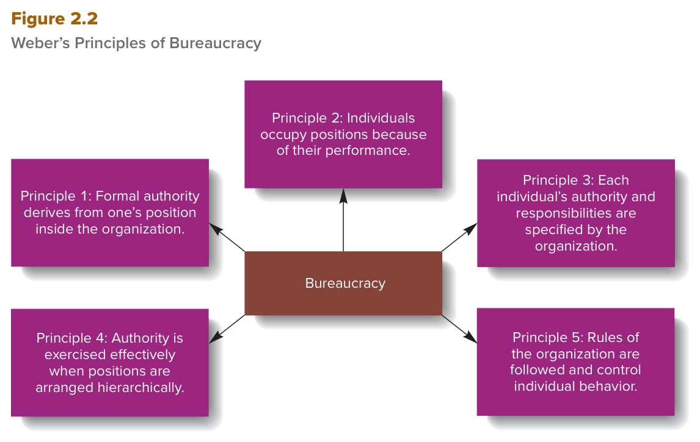
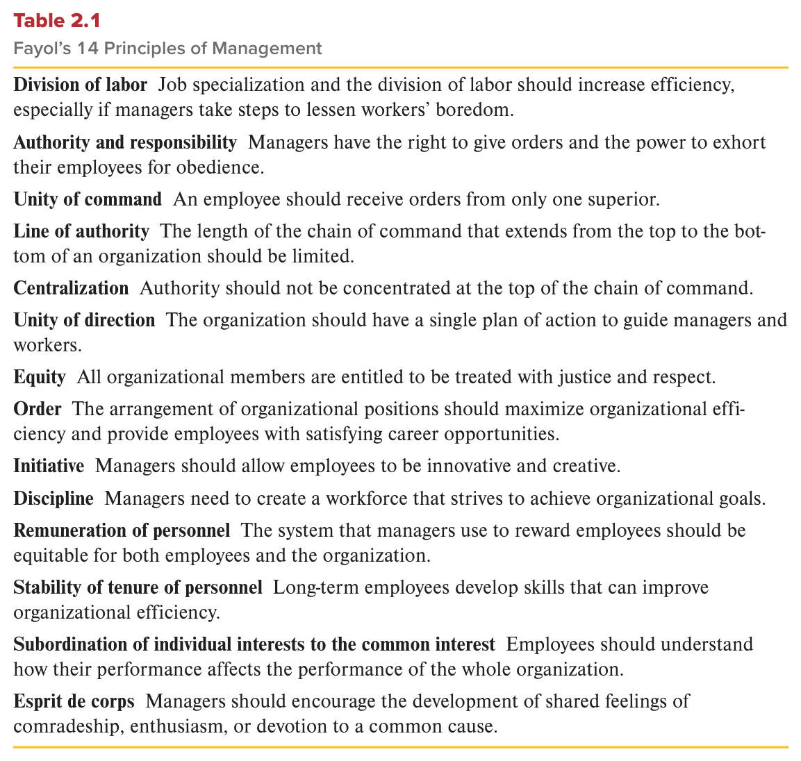

MGT 102 · Chapter 2 · Section 2 of 4:
Administrative Management Theory
Objective LO2-3: Identify the principles of administration and organization that underlie effective organizations.
In the last section, Taylor and the Gilbreths were standing next to the worker with a stopwatch, counting his movements. Here the camera moves up: two men from Europe — Max Weber and Henri Fayol — asked a bigger question: how do you build the company itself so that it becomes efficient and effective? Weber answered with five principles of bureaucracy, and Fayol answered with fourteen principles of management.
Those two numbers (5 and 14) are the most expected thing on the exam, and with them come the look-alike terms: rules vs. SOPs vs. norms, and unity of command vs. unity of direction. Focus on those differences more than on blind memorizing.
You already met these ideas in Arabic. This page gives you the same ideas in English, because your textbook and your exam are in English.
The main term of this whole section:
administrative management = the study of how to build an organizational structure and control system that leads to high efficiency and effectiveness. Notice the two words: structure and control system — they are the fingerprint of this section.
And a second definition you must keep with it:
organizational structure = the system of task and authority relationships that controls how employees use resources to achieve the organization's goals. (Go back to Chapter 1: there the book called it the outcome of organizing.)
The two most influential early views on building efficient systems of administration came from Europe, and you must tell them apart:
| Max Weber | Henri Fayol | |
|---|---|---|
| Nationality and job | German — a sociology professor | French — the CEO of Comambault Mining |
| Years of his life | 1864–1920 | 1841–1925 |
| His theory | bureaucracy | principles of management |
| The count (memorize it!) | 5 principles (Figure 2.2) | 14 principles (Table 2.1) |
| What makes him special | authority is formal, from the position | formal + informal, from expertise |
This Fayol is the same man you met in Chapter 1 — the one with the four functions (planning, organizing, leading, controlling). Same man, and here you see his other half.
A point the book insists on: the two worked at the same time, but each one independently — meaning neither of them was reading the other. That is why you see similar ideas with no copying.
While scientific managers were studying the person–technology mix to increase efficiency, other managers and researchers were focusing on administrative management, the study of how to create an organizational structure and control system that leads to high efficiency and effectiveness. Organizational structure is the system of task and authority relationships that controls how employees use resources to achieve the organization's goals.
Two of the most influential early views regarding the creation of efficient systems of organizational administration were developed in Europe: Max Weber, a German sociology professor, developed one theory, and Henri Fayol, the French manager who developed the model of management introduced in Chapter 1, developed the other.
Max Weber (1864–1920) wrote at the turn of the 20th century, when Germany was going through its industrial revolution and was striving to become a world power. To help it manage its growing industrial enterprises, he developed the principles of bureaucracy.
bureaucracy = a formal system of organization and administration designed to ensure efficiency and effectiveness. The word formal is the key — official, written, clear, not a mood.
A bureaucratic system is based on five principles, and they are the ones you see summarized in Figure 2.2:

In the middle there is a box that says Bureaucracy, and around it five boxes — one for each principle. Notice: there is no arrow between the principles themselves and no order 1 → 2 → 3. The five together are what make up bureaucracy, and all of them must be applied for the system to work. Count the boxes before the exam: five. The expected questions: "how many principles?" → five · "which principle is about hierarchy?" → the fourth · "which principle is about rules?" → the fifth.
Principle 1: In a bureaucracy, a manager's formal authority derives from the position they hold in the organization.
The manager's formal authority comes from the position, not from his person. Because a manager's power derives from the job he holds, the book defines here:
authority = the power to hold people accountable for their actions and to make decisions concerning the use of the organization's resources. Authority also gives the manager the right to direct and control his employees' behavior.
And the exam sentence of the section: in a bureaucratic system, obedience is owed to a manager not because of any personal qualities — such as personality, wealth, or social status — but because he occupies a position that is associated with a certain level of authority and responsibility.
Principle 2: In a bureaucracy, people should occupy positions because of their performance, not because of their social standing or personal contacts.
Meaning: performance is what gets you the position, not social standing and not personal contacts. And the book is honest with you: this principle was not always followed in Weber's time, and it is often ignored today — some organizations and industries are still affected by social networks, where contacts and relations — not job-related skills — influence hiring and promotion decisions. In plain words: wasta.
Principle 3: The extent of each position's formal authority and task responsibilities, and its relationship to other positions in an organization, should be clearly specified.
The extent of every position's authority and its responsibilities, and its relationship to other positions, must be clearly defined. Two benefits:
Principle 4: Authority can be exercised effectively in an organization when positions are arranged hierarchically so employees know whom to report to and who reports to them.
Authority is exercised effectively when positions are arranged in a hierarchy of authority that makes clear who reports to whom, and where a manager or a worker should go if a conflict or a problem arises. The book gives specific examples: this principle is especially important in the military, the FBI, and the CIA and other organizations that deal with sensitive issues involving possible major repercussions — because it is vital that managers at high levels can hold employees accountable for their actions.
Principle 5: Managers must create a well-defined system of rules, standard operating procedures, and norms so they can effectively control behavior within an organization.
Here the book defines three terms at once — and they are important enough that I put them in their own concept below, so read the next concept properly.
What happens if you apply all five? Weber believed the organization builds a bureaucratic system that improves organizational performance, and specifically:
And the other side — if bureaucracy is not managed well:
To help Germany manage its growing industrial enterprises while it was striving to become a world power, Weber developed the principles of bureaucracy—a formal system of organization and administration designed to ensure efficiency and effectiveness. A bureaucratic system of administration is based on the five principles summarized in Figure 2.2.
Authority is the power to hold people accountable for their actions and to make decisions concerning the use of organizational resources. In a bureaucratic system of administration, obedience is owed to a manager not because of any personal qualities—such as personality, wealth, or social status—but because the manager occupies a position that is associated with a certain level of authority and responsibility.
Sometimes managers allow rules and SOPs, so-called bureaucratic red tape, to become so cumbersome that decision making is slow and inefficient and organizations cannot change. A key challenge for managers is to use bureaucratic principles to benefit, rather than harm, an organization.
These three come from Principle 5 of Weber, and the exam loves to mix them up. Read the table and watch the "Written?" column — it is the key:
| Term | The book's definition | Written? | It answers the question |
|---|---|---|---|
| rules القواعد |
formal, written instructions that specify the actions to be taken under different circumstances to achieve specific goals (the book's example: if A happens, do B) | Yes · formal | What do I do? |
| standard operating procedures (SOPs) إجراءات التشغيل المعيارية |
specific sets of written instructions about how to perform a certain aspect of a task | Yes · formal | How exactly do I do it? |
| norms الأعراف |
unwritten, informal codes of conduct that prescribe how people should act in particular situations, and that most members of a group or an organization consider important | No · informal | What is the accepted way among us? |
The book's example, word for word (memorize it, it is the clearest example of the difference):
Why do they matter? The three of them give behavioral guidelines that improve the performance of the bureaucratic system, because they specify the best ways to accomplish the organization's tasks.
The company examples in the book:
Rules are formal, written instructions that specify actions to be taken under different circumstances to achieve specific goals (for example, if A happens, do B). Standard operating procedures (SOPs) are specific sets of written instructions about how to perform a certain aspect of a task. A rule might state that at the end of the workday employees are to leave their machines in good order, and a set of SOPs would specify exactly how they should do so, itemizing which machine parts must be oiled or replaced.
Norms are unwritten, informal codes of conduct that prescribe how people should act in particular situations and are considered important by most members of a group or an organization. For example, an organizational norm in a restaurant might be that waiters should help each other if time permits.
The table first. Henri Fayol (1841–1925) was the CEO of Comambault Mining. He worked at the same time as Weber, but independently, and identified 14 principles that he believed essential to increasing the efficiency of the management process. The book discusses them in detail because — although they were developed at the turn of the 20th century — they remain the bedrock on which much of recent management theory and research are based.

A table of 14 rows: on the left of each row the name of the principle in bold, and after it one sentence explaining it. This table is the most likely question in the whole chapter — because the exam gives you the sentence and asks "which principle is this?", or gives you the name and asks what it means. How to study it: cover the long text, read only the names, and try to produce the explanation from your head; then flip and read the sentence. Count the rows before the exam: 14 — not 10 and not 12.
These are the table's lines word for word from the book, with a simple-English line beside each:
| # | Principle | The book's exact line | In simple words |
|---|---|---|---|
| 1 | Division of labor | Job specialization and the division of labor should increase efficiency, especially if managers take steps to lessen workers' boredom. | Specialization raises efficiency — if you cut the boredom |
| 2 | Authority and responsibility | Managers have the right to give orders and the power to exhort their employees for obedience. | The manager may give orders and push for obedience |
| 3 | Unity of command | An employee should receive orders from only one superior. | The employee takes orders from one boss only |
| 4 | Line of authority | The length of the chain of command that extends from the top to the bottom of an organization should be limited. | The chain of command must be kept short |
| 5 | Centralization | Authority should not be concentrated at the top of the chain of command. | Authority should not pile up at the top |
| 6 | Unity of direction | The organization should have a single plan of action to guide managers and workers. | One plan of action guides everybody |
| 7 | Equity | All organizational members are entitled to be treated with justice and respect. | Every member deserves justice and respect |
| 8 | Order | The arrangement of organizational positions should maximize organizational efficiency and provide employees with satisfying career opportunities. | Arranging positions raises efficiency and gives career chances |
| 9 | Initiative | Managers should allow employees to be innovative and creative. | Let employees invent and create |
| 10 | Discipline | Managers need to create a workforce that strives to achieve organizational goals. | Build a workforce that works hard for the goals |
| 11 | Remuneration of personnel | The system that managers use to reward employees should be equitable for both employees and the organization. | The reward system is fair to both sides |
| 12 | Stability of tenure of personnel | Long-term employees develop skills that can improve organizational efficiency. | The long-staying employee builds skills that raise efficiency |
| 13 | Subordination of individual interests to the common interest | Employees should understand how their performance affects the performance of the whole organization. | The common interest comes before the individual one |
| 14 | Esprit de corps | Managers should encourage the development of shared feelings of comradeship, enthusiasm, or devotion to a common cause. | Team spirit: friendship, enthusiasm, devotion to one cause |
The principles the book details. The book did not stop at the table; it detailed every principle. These are the details that come in the questions:
1 · DIVISION OF LABOR — Fayol was a champion of job specialization and the division of labor, but he was among the first to point out the downside of too much specialization: boredom — a state of mind likely to diminish three things: product quality · worker initiative · flexibility. Managers should therefore take steps to lessen that boredom, so Fayol advocated that workers be given more job duties or be encouraged to assume more responsibility for work outcomes — a principle applied more and more today in organizations that empower their workers. The example: modern grocery stores like Publix: in the bakery and the deli, employees focus on creating cakes, pies, and ready-to-eat meals, and that way they develop expertise they might not otherwise gain.
2 · AUTHORITY AND RESPONSIBILITY — Like Weber, Fayol emphasized the importance of authority and responsibility, but he went further: Weber stopped at formal authority, which derives from the manager's position in the hierarchy, while Fayol also recognized informal authority — and he listed four sources for it:
3 · UNITY OF COMMAND — unity of command = a reporting relationship in which an employee receives orders from, and reports to, only one superior. Fayol believed that dual command — the reporting relationship that exists when two supervisors give orders to the same employee — should be avoided except in exceptional circumstances. Why? Because dual command confuses employees, undermines order and discipline, and creates havoc within the formal hierarchy of authority. The example: the U.S. Army — ranks are clearly defined from private to five-star general, and each soldier answers to a commanding officer of a higher rank. In the field it is critical that soldiers understand their objectives, and consistent unity of command lets each soldier know exactly whom to follow to get the job done.
4 · LINE OF AUTHORITY — line of authority =
the chain of command extending from the top to the bottom of an organization. Fayol was
one of the first management theorists to point out the importance of limiting the length of the chain of command by
controlling the number of levels in the managerial hierarchy. The logic: the more levels there are, the
longer communication takes between top and bottom managers, and the slower the pace of planning and organizing.
Cutting the number of levels lets the organization act quickly and flexibly.
A second point: when an organization is split into departments or functions, each with its own hierarchy, it is important to let
middle and first-line managers in each department interact with managers at similar levels in other departments —
this speeds up decision making because the managers know each other and know whom to go to when problems arise.
And the condition for this cross-departmental integration to work:
keeping one's superiors informed about what is taking place, so that lower-level decisions do not harm activities in
other parts of the organization.
5 · CENTRALIZATION — centralization = the concentration of authority at the top of the managerial hierarchy. Fayol was one of the first writers to focus on it, and his view is clear: authority should not be concentrated at the top of the chain of command. The most significant issue facing a top manager: how much authority to centralize at the top, and what authority to decentralize to managers and workers at lower levels — and this issue affects people's behavior at all levels.
| If authority is very centralized | The good side | The bad side |
|---|---|---|
| Only top managers make the important decisions, and employees simply follow orders | Great control over activities, and it helps ensure the organization is pursuing its strategy | Hard for the people closest to the problems to respond in a timely manner; it also reduces the motivation of middle and first-line managers and makes them less flexible and adaptable, because they become reluctant to make decisions on their own — they get used to others deciding for them |
The trend today: the pendulum is swinging toward decentralization, because organizations seek to empower middle managers and create self-managed teams that monitor and control their own activities — both to increase organizational flexibility and to reduce operating costs and increase efficiency.
6 · UNITY OF DIRECTION — unity of direction = the singleness of purpose that makes possible the creation of one plan of action to guide managers and workers as they use organizational resources. An organization without a single guiding plan becomes inefficient and ineffective; its activities become unfocused, and individuals and groups work at cross-purposes. Successful planning starts with top managers working as a team to craft the organization's strategy, which they communicate to middle managers, who decide how to use the resources to implement the strategy.
7 · EQUITY — Fayol's own quote: "equity results from the combination of respect and justice" — meaning equity = respect + justice. And the definition: equity = the justice, impartiality, and fairness to which all organizational members are entitled. The subject is receiving much attention today; the desire to treat employees fairly is a primary concern of managers. (The book's note: Equity theory is discussed in Chapter 13.)
8 · ORDER — like Taylor and the Gilbreths, Fayol was interested in analyzing jobs, positions, and individuals to ensure the organization was using its resources as efficiently as possible. To Fayol, order meant the methodical arrangement of positions to provide the organization with the greatest benefit and to provide employees with career opportunities. The practical application: he recommended the use of organizational charts to show the position and duties of each employee and to indicate which positions an employee might move to or be promoted into in the future, and he advocated extensive career planning to help ensure orderly career paths.
9 · INITIATIVE — initiative = the ability to act on one's own without direction from a superior. Although order and equity are important for fostering commitment and loyalty, Fayol believed the manager must also encourage employees to exercise initiative. Used properly, initiative becomes a major source of strength for the organization because it leads to creativity and innovation. The manager needs skill and tact to achieve the difficult balance between the organization's need for order and employees' desire for initiative — and Fayol believed the ability to strike this balance was a key indicator of a superior manager.
10 · DISCIPLINE — discipline = obedience, energy, application, and other outward marks of respect for a superior's authority. By focusing on it, Fayol was addressing the concern of many early managers: how to create a workforce that was reliable and hardworking and would strive to achieve organizational goals. According to Fayol, discipline results in respectful relationships between organizational members and reflects the quality of the organization's leadership and the manager's ability to act fairly and equitably — so discipline is an indicator of the manager, not only of the worker.
11 · REMUNERATION OF PERSONNEL — Fayol proposed reward systems including bonuses and profit-sharing plans — increasingly used today. Convinced from his own experience that an organization's payment system has important implications for organizational success, he believed an effective reward system has four characteristics:
The example: Syndio — a recent startup whose software companies use to analyze and resolve pay equity issues caused by gender, race, or other issues, and to provide strategies for fixing the disparities among employees. More than 200 companies work with Syndio, including Salesforce, Nordstrom, and NerdWallet.
12 · STABILITY OF TENURE OF PERSONNEL — Fayol recognized the importance of long-term employment, and this idea has been echoed by contemporary management gurus: Tom Peters, Jeff Pfeffer, Jim Collins (memorize the three). The reason: when employees stay with an organization for extended periods, they develop skills that improve the organization's ability to use its resources.
13 · SUBORDINATION OF INDIVIDUAL INTERESTS TO THE COMMON INTEREST — the interests of the organization as a whole must take precedence over the interests of any individual or group, if the organization is to survive. And equitable agreements must be established between the organization and its members so that employees are treated fairly and rewarded for their performance, and so that the disciplined organizational relationships vital to an efficient system of administration are maintained.
14 · ESPRIT DE CORPS — the appropriate design of the hierarchy of authority + the right mix of order and discipline = cooperation and commitment. And a key element in a successful organization is the development of esprit de corps — a French expression that refers to shared feelings of comradeship, enthusiasm, or devotion to a common cause among members of a group. An important note from the book: today the term organizational culture is used to refer to these shared feelings, and that concept is discussed at length in Chapter 3.
Henri Fayol (1841–1925) was the CEO of Comambault Mining. Working at the same time as Weber, but independently, Fayol identified 14 principles (summarized in Table 2.1) that he believed essential to increasing the efficiency of the management process. They remain the bedrock on which much of recent management theory and research are based.
The principle of unity of command specifies that an employee should receive orders from, and report to, only one superior. Fayol believed that dual command, the reporting relationship that exists when two supervisors give orders to the same employee, should be avoided except in exceptional circumstances. Dual command confuses employees, undermines order and discipline, and creates havoc within the formal hierarchy of authority.
The line of authority is the chain of command extending from the top to the bottom of an organization. Centralization is the concentration of authority at the top of the managerial hierarchy; Fayol believed authority should not be concentrated at the top of the chain of command. Unity of direction is the singleness of purpose that makes possible the creation of one plan of action to guide managers and workers as they use organizational resources.
Equity is the justice, impartiality, and fairness to which all organizational members are entitled. Order is the methodical arrangement of positions to provide the organization with the greatest benefit and to provide employees with career opportunities. Initiative is the ability to act on one's own without direction from a superior. Discipline is obedience, energy, application, and other outward marks of respect for a superior's authority. Esprit de corps refers to shared feelings of comradeship, enthusiasm, or devotion to a common cause among members of a group.
The book closes the section with four points:
And the MANAGEMENT INSIGHT feature in the book — E Source's Approach to Employee Satisfaction and Productivity:
Some of the principles that Fayol outlined have faded from contemporary management practices, but the basic concerns that motivated Fayol continue to inspire management theorists. The principles that Fayol and Weber set forth still provide clear and appropriate guidelines that managers can use to create a work setting that efficiently and effectively uses organizational resources. These principles remain the bedrock of modern management theory; recent researchers have refined or developed them to suit modern conditions. For example, Weber's and Fayol's concerns for equity and for establishing appropriate links between performance and reward are central themes in contemporary theories of motivation and leadership.
Max Weber and Henri Fayol outlined principles of bureaucracy and administration that are as relevant to managers today as they were when developed at the turn of the 20th century. For example, the use of cross-departmental teams and the empowerment of workers are issues that managers also faced a century ago.
The questions are in English because the exam is in English. Answer first, then open the solution. If you miss question 3 or 4, go back to my traps "rules vs. norms" and "unity of command vs. unity of direction".
B. This is Weber's first principle word for word: formal authority derives from the position, and the book names and denies personality, wealth, or social status. The trap is in A: informal authority from personal expertise is Fayol's addition, not Weber's — and the question asks about Weber. C is a name trap from Fayol's 14 principles and has nothing to do with authority. D is a trap: red tape is the negative side of bureaucracy, not a definition of authority.
C. That is the centralization line from Table 2.1 — one of Fayol's 14 principles, not one of the boxes in Figure 2.2. A, B, and D are Weber's principles 1, 5, and 4 exactly as the figure shows them. The trap: the question uses EXCEPT, and the wrong choice looks right because it really is a management principle — just from a different author. Go back to the figure and count the boxes: five only.
C. This is the book's own example of a norm: unwritten, informal codes of conduct that most members of the group consider important. The key words in the question: no manager has ever written this down. The trap in A and B: both are written and formal — a rule says what to do, and an SOP says how exactly to do it. D is a name trap from Fayol's principles about the chain of command.
B. single plan of action + at cross-purposes = the definition of unity of direction word for word: the singleness of purpose that makes one plan of action possible. The big trap is in A: the names look alike, but unity of command is about one boss for the employee (a person), not one plan for the organization. C is about putting the organization's interest before the individual's, and D is about arranging positions and organizational charts — both are real principles but not the one meant here.
D. The book is clear: the two worked at the same time but independently — neither of them built on the other. A and B are correct: 5 for Weber and 14 for Fayol, and this is the number most often flipped on the exam, so memorize it together with the nationality and the job. C is correct too: informal authority is Fayol's addition on top of Weber's formal authority, and it has four sources (personal expertise, technical knowledge, moral worth, and the ability to lead and generate commitment).
| Term | What it means | Watch out for |
|---|---|---|
| Administrative management | The study of how to create an organizational structure and control system for high efficiency and effectiveness | structure + control system — not the study of the worker and the task (scientific) |
| Organizational structure | The system of task and authority relationships that controls how employees use resources | task and authority relationships — the Chapter 2 wording |
| Max Weber | The German professor who developed the principles of bureaucracy | German · sociology professor · 5 principles · 1864–1920 |
| Henri Fayol | The French CEO who identified the 14 principles of management | French · CEO of Comambault Mining · 14 principles · 1841–1925 |
| Bureaucracy | A formal system of organization and administration designed to ensure efficiency and effectiveness | a formal system — not red tape |
| Authority | The power to hold people accountable and to make decisions about the use of resources | for Weber it comes from the position, not from personal qualities |
| Rules | Formal, written instructions that specify the actions to take in different circumstances | written and formal — they say what (if A happens, do B) |
| Standard operating procedures (SOPs) | Specific sets of written instructions about how to perform an aspect of a task | written — they say how exactly |
| Norms | Unwritten, informal codes of conduct that most members consider important | unwritten and informal — the waiters example |
| Bureaucratic red tape | Rules and SOPs that became so cumbersome that decisions are slow | the negative side — slow decisions and inflexible behavior |
| Unity of command | A reporting relationship in which an employee receives orders from only one superior | one boss for the employee — not one plan |
| Dual command | The reporting relationship when two supervisors give orders to the same employee | two supervisors — avoided except in exceptional circumstances |
| Line of authority | The chain of command extending from the top to the bottom of an organization | its length must be limited |
| Centralization | The concentration of authority at the top of the managerial hierarchy | Fayol says it should not happen |
| Unity of direction | The singleness of purpose that makes one plan of action possible | one plan for the organization — not one boss |
| Equity | The justice, impartiality, and fairness to which all members are entitled | respect + justice · Equity theory is in Chapter 13 |
| Order | The methodical arrangement of positions for the greatest benefit and for career opportunities | organizational charts and career planning |
| Initiative | The ability to act on one's own without direction from a superior | balancing it with order is a key indicator of a superior manager |
| Discipline | Obedience, energy, application, and other outward marks of respect for a superior's authority | it reflects the quality of leadership, not only the worker |
| Esprit de corps | Shared feelings of comradeship, enthusiasm, or devotion to a common cause | a French expression · today called organizational culture (Chapter 3) |
These are the general English words on this page, not the management terms. Learn them and the textbook gets much easier to read.
| Word | Part of speech | العربية | Example sentence from this lesson |
|---|---|---|---|
| accountable | adjective | مُحاسَب / مسؤوليعني لازم يجاوب عن اللي سواه، لو غلط يتحمّل النتيجة | Authority is the power to hold people accountable for their actions. |
| arrange | verb | يرتّب / ينظّميعني تحط الأشياء في ترتيب معيّن، كل واحد في مكانه | Authority is exercised effectively when positions are arranged in a hierarchy of authority. |
| bedrock | noun | الأساس الصخرييعني الأساس القوي اللي كل شي يبني عليه، ما يتحرك | Fayol's principles remain the bedrock on which much of recent management theory and research are based. |
| boredom | noun | الملليعني الشغل نفسه كل يوم لدرجة تزهق وتفقد الحماس | Fayol was among the first to point out the downside of too much specialization: boredom. |
| cumbersome | adjective | ثقيل ومعقّديعني كبير وثقيل وصعب تتعامل معه، يبطّئك | Sometimes managers allow the rules and SOPs to become so cumbersome that decision making becomes slow and inefficient. |
| derive | verb | يستمدّ / يجي منيعني الشي مصدره من مكان ثاني، منه جاي | A manager's power derives from the job he holds. |
| devotion | noun | تفانٍ / إخلاصيعني تعطي الشي من قلبك وتضحّي له، مو بس واجب | Esprit de corps refers to shared feelings of comradeship, enthusiasm, or devotion to a common cause. |
| diminish | verb | يقلّل / يضعفيعني ينزّل الشي ويصغّره شوي شوي | Boredom is a state of mind likely to diminish product quality, worker initiative, and flexibility. |
| entitled | adjective | له الحق فييعني من حقه ياخذ الشي، مو منّة عليه | Equity is the justice, impartiality, and fairness to which all organizational members are entitled. |
| equitable | adjective | منصف / عادليعني كل واحد ياخذ حقه بالعدل، ما في واحد ياخذ أكثر بدون سبب | Fair and equitable selection and promotion systems improve managers' feelings of security and reduce stress. |
| exercise | verb | يمارس (السلطة)يعني تستخدم الشي فعلياً على الأرض، مو بس تملكه | Authority is exercised effectively when positions are arranged in a hierarchy of authority. |
| havoc | noun | فوضى وخرابيعني لخبطة كبيرة تخرّب كل شي | Dual command confuses employees, undermines order and discipline, and creates havoc within the formal hierarchy of authority. |
| impartiality | noun | الحياديعني ما تميل لأحد ولا تفضّل واحد على واحد | Equity is the justice, impartiality, and fairness to which all members are entitled. |
| inflexible | adjective | جامد / ما يتغيّريعني ما يقبل يتحرك ولا يعدّل، ماشي على شي واحد بس | When a manager relies too much on rules, his behavior becomes inflexible. |
| lessen | verb | يخفّف / يقلّليعني ينزّل مقدار الشي، يخليه أقل | Managers should take steps to lessen that boredom. |
| methodical | adjective | منهجي / مرتّب بنظاميعني على خطوات وترتيب واضح، مو عشوائي | Order meant the methodical arrangement of positions to provide the organization with the greatest benefit. |
| obedience | noun | الطاعةيعني تسمع الكلام وتنفّذ الأمر | Discipline is obedience, energy, application, and other outward marks of respect for a superior's authority. |
| occupy | verb | يشغل (منصباً)يعني قاعد في الكرسي ذا وصاحب هذي الوظيفة | Obedience is owed to a manager because he occupies a position associated with a certain level of authority and responsibility. |
| overarching | adjective | شامل / عام فوق الكليعني الهدف الكبير اللي يغطي كل الأهداف الصغيرة تحته | Employees did not understand how their work related to any overarching company objectives. |
| precedence | noun | الأولوية / الأسبقيةيعني يجي قبل غيره في الترتيب والأهمية | The interests of the organization as a whole must take precedence over the interests of any individual or group. |
| prescribe | verb | يحدد / يفرضيعني يقول لك سوّ كذا بالضبط، زي الدكتور لما يكتب الدواء | Norms are unwritten, informal codes of conduct that prescribe how people should act in particular situations. |
| reluctant | adjective | متردّد / ما يبييعني ما يرتاح يسوي الشي ويتأخّر عنه | Very centralized authority makes middle and first-line managers reluctant to make decisions on their own. |
| repercussion | noun | تبعات / نتائج خطيرةيعني آثار تجي بعدين بسبب قرار أو غلط، وغالباً مو حلوة | This principle is especially important in organizations that deal with sensitive issues involving possible major repercussions. |
| specify | verb | يحدد بوضوحيعني يقول الشي بالتفصيل وبالاسم، ما يخلي مجال للتخمين | The SOPs specify exactly how they should do so — which machine parts must be oiled or replaced. |
| strive | verb | يسعى / يكافحيعني تتعب وتحاول بقوة عشان توصل لشي | Germany was striving to become a world power. |
| tact | noun | لباقة / كياسةيعني تعرف كيف تتكلم وتتعامل بدون ما تزعل أحد | The manager needs skill and tact to achieve the difficult balance between the organization's need for order and employees' desire for initiative. |
| undermine | verb | يقوّض / يضعف من تحتيعني يهدّ الشي من أساسه شوي شوي بدون ما تحس | Dual command confuses employees and undermines order and discipline. |
Built from the text of the textbook Contemporary Management 12e (Jones & George, McGraw Hill) —
Chapter 2: The Evolution of Management Thought, the section Administrative Management Theory,
objective LO2-3 (pages 38–43), with the book's Summary and Review.
Summarized only: the side feature MANAGEMENT INSIGHT (the E Source story) is
shortened into bullet points, and the Publix, Syndio, Walmart, and U.S. Army examples get one or two lines each.
The details of organizational culture are in Chapter 3, and equity theory is in Chapter 13 — not in this chapter.